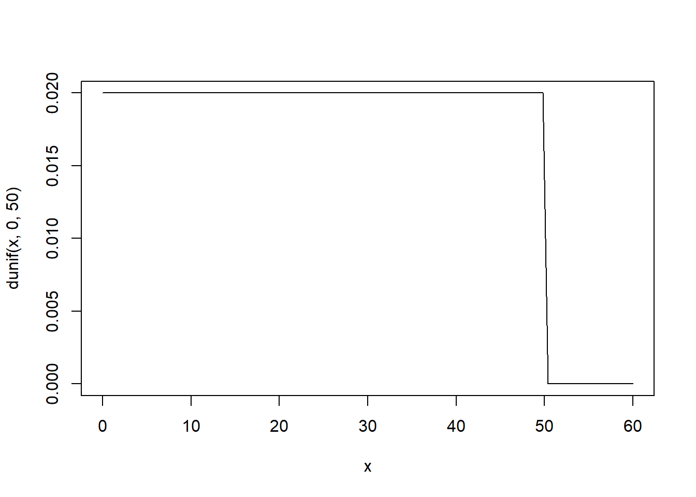
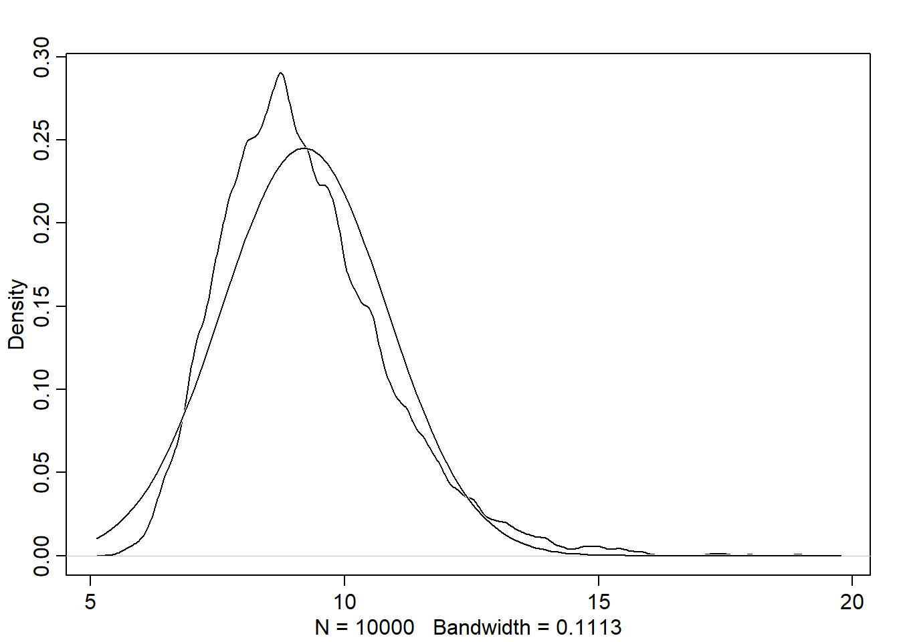

Chapter 10 Gaussian model of human height
10.0.1 The data
## 'data.frame': 544 obs. of 4 variables:
## $ height: num 152 140 137 157 145 ...
## $ weight: num 47.8 36.5 31.9 53 41.3 ...
## $ age : num 63 63 65 41 51 35 32 27 19 54 ...
## $ male : int 1 0 0 1 0 1 0 1 0 1 ...## mean sd 5.5% 94.5%
## height 138.2635963 27.6024476 81.108550 165.73500
## weight 35.6106176 14.7191782 9.360721 54.50289
## age 29.3443934 20.7468882 1.000000 66.13500
## male 0.4724265 0.4996986 0.000000 1.0000010.0.2 The model and prior
Based on domain-specific information, we decide that the range of plausible human heights is \(178 \mp 40\). The std. deviation must be basically positive \(h_i \sim Normal(\mu, \sigma)\)
Given that the parameters are independent, the prior is:
\(Pr(\mu, \sigma) = Pr(\mu)Pr(\sigma)\)
Where:
\(\mu \sim Normal(178,20)\) \(\sigma \sim Uniform(0, 50)\)
Let’s plot the priors: - Mean

- Std. deviation

Let’s simulate heights based on the priors. This is called the prior predictive simulation:
sample_mu <- rnorm(1e4, 178, 20)
sample_sigma <- runif(1e4, 0, 50)
prior_h <- rnorm(1e4, sample_mu, sample_sigma)
dens(prior_h)So far, the model is defined before showing it the data. We can change the prior \(\mu\) std. deviation to see how the model is sensitive to the prior choices that aren’t relying on scintific knowledge as we did.
sample_mu <- rnorm(1e4, 178, 100)
sample_sigma <- runif(1e4, 0, 50)
prior_h <- rnorm(1e4, sample_mu, sample_sigma)
dens(prior_h)Note how the result doesn’t make sense with negative and very large heights.
10.1 Grid approximation of the posterior distribution
Since we have 2 parameters, grid approx. method is not practical. However, we will try using it computing the log-likelihood:
# we will compute the approximation using the height data of persons over 18 y.o.
d2 <- d[d$age >= 18,]
mu.list <- seq(from=150, to=160, length.out=100)
sigma.list <- seq(from=7, to=9, length.out=100)
# Create a Data Frame from All Combinations of Factor Variables
post <- expand.grid(mu=mu.list, sigma=sigma.list)
# compute the log-likelihood
post$LL <- sapply(
1:nrow(post),
function(i) sum (
dnorm(d2$height, post$mu[i], post$sigma[i], log=TRUE)
)
)
post$prod <- post$LL + dnorm(post$mu, 178, 20, TRUE) + dunif(post$sigma, 0, 50, TRUE)
post$prob <- exp(post$prod - max(post$prod))
contour_xyz(post$mu, post$sigma, post$prob)
10.2 Sampling from the posterior
# generate random indexes of rows
sample.rows <- sample(1:nrow(post), size=1e4, replace=TRUE, prob=post$prob)
sample.mu <- post$mu[sample.rows]
sample.sigma <- post$sigma[sample.rows]
# this shows the most plausible combinations of mu and sigma
plot(sample.mu, sample.sigma, cex=0.5, pch=16, col=col.alpha(rangi2, 0.1))Let’s check the shape of marginal posterior densities:
Note that the density for sigma has a longer right tail
d3 <- sample(d2$height, size = 20)
mu.list <- seq( from=150, to=170 , length.out=200 )
sigma.list <- seq( from=4 , to=20 , length.out=200 )
post2 <- expand.grid( mu=mu.list , sigma=sigma.list )
post2$LL <- sapply( 1:nrow(post2) , function(i) sum( dnorm( d3 , mean=post2$mu[i] , sd=post2$sigma[i] , log=TRUE ) ) )
post2$prod <- post2$LL + dnorm( post2$mu , 178 , 20 , TRUE ) + dunif( post2$sigma , 0 , 50 , TRUE )
post2$prob <- exp( post2$prod - max(post2$prod) )
sample2.rows <- sample( 1:nrow(post2) , size=1e4 , replace=TRUE , prob=post2$prob )
sample2.mu <- post2$mu[ sample2.rows ]
sample2.sigma <- post2$sigma[ sample2.rows ]
plot( sample2.mu , sample2.sigma , cex=0.5 , col=col.alpha(rangi2,0.1) , xlab="mu" , ylab="sigma" , pch=16 )
10.3 Finding the posterior with quap
Quadratic Approximation is good to make inferences about the shape of posterior, particularly its peak that lie at the maximum a posteriori (MAP)
Let’s first load the data:
Now, we will define our model with code:
\(h_i \sim Normal(\mu, \sigma)\)
\(\mu \sim Normal(178,20)\)
\(\sigma \sim Uniform(0, 50)\)
Note: alist stores formulas without executing the expression in the code unlike list
Now, we fit the mode to the data in `d2`:
Let’s take a glance at the model (i.e posterior dist):
## mean sd 5.5% 94.5%
## mu 154.607201 0.4119492 153.948827 155.265575
## sigma 7.730478 0.2913055 7.264916 8.19604110.4 Sampling from a quap
## mu sigma
## 1 155.3808 7.372322
## 2 154.8912 7.774284
## 3 155.1147 7.671096
## 4 154.1441 7.818519
## 5 155.0759 7.983457
## 6 154.8982 7.093661## mean sd 5.5% 94.5%
## mu 154.604963 0.4134325 153.952468 155.276243
## sigma 7.732341 0.2863066 7.282393 8.195132Comparing these values to the output from precis(m4.1), we found it very close.
10.4.0.1 Sampling the multivariate posterior w/o rethinking
The function extract.samples runs the following simulation that samples random vectors of multivariate Gaussian values. This simulation requires computing the variance-covariance matrix
10.4.1 Variance-Covariance Matrix
It is an essential compnent in the
quapalgorithm.It tells us how each parameter relates to every other parameter in the posterior distribution.
It can be factored into 2 elements:
Vector of variances for the parameters
diag(vcov(model))Correlation matrix that tells how changes in one parameter lead to correlated changes in the others
cov2cor(vcov(model))